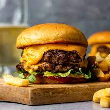

Burger
Home

An easy and flavourful smash burger assmbled to perfection.
Ingredients
- Burger buns
- Ground beef
- Favourite cheese (sliced)
- Mayonnaise, ketchup (or your favourite condements)
- Onion powder (to taste)
- Salt and pepper (to taste)
- Tomato
- Lettuce
Steps:
- Preheat a large flat skillet on mediium high heat.
- Place the ground beef into the bowl along with the seasonings to taste (feel free to add different seasonings but those listed above are the basics) and mix until the beef is coated
With the seasoning and is somewhat fragrant. Then shape into balls that are even in size and weight.
- Splash a little of some kind of light oil such as vegetable oil on the skillet and place a ball of the ground beef on the skillet and smash flat so it's slightly larger than the
burger bun and flip when the under side is brown. Then place a slice (of each cheese you chose generally no more than 2 slices) on top of the flipped patty.
- Whilst the other side of the patty is cooking toast both slices of burger buns on each side on another area of the skillet (or even in a toaster) until slightly brown. Also, wash and
slice the tomato into slices and have a washed leaf from the lettuce ready.
- If everything is ready, it's assembly time. First, spread whatever condements you like on both buns, then place lettuce leaf and then the beef patty on top of that. Then you add your
slice of tomato with a small sprinkle of salt and then you want to crown your burger with the top half of the burger bun.